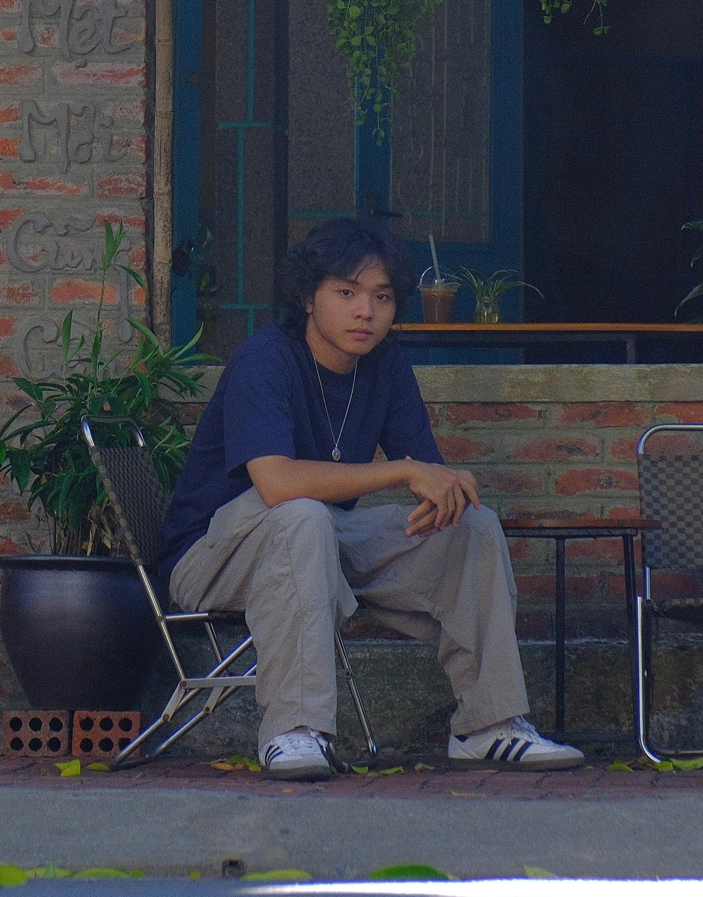
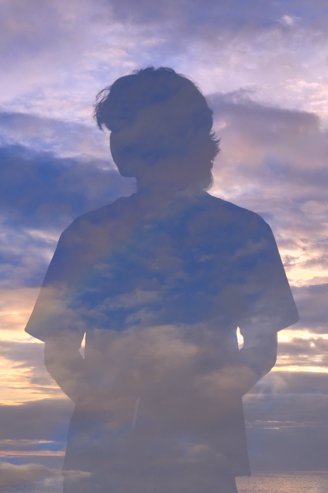
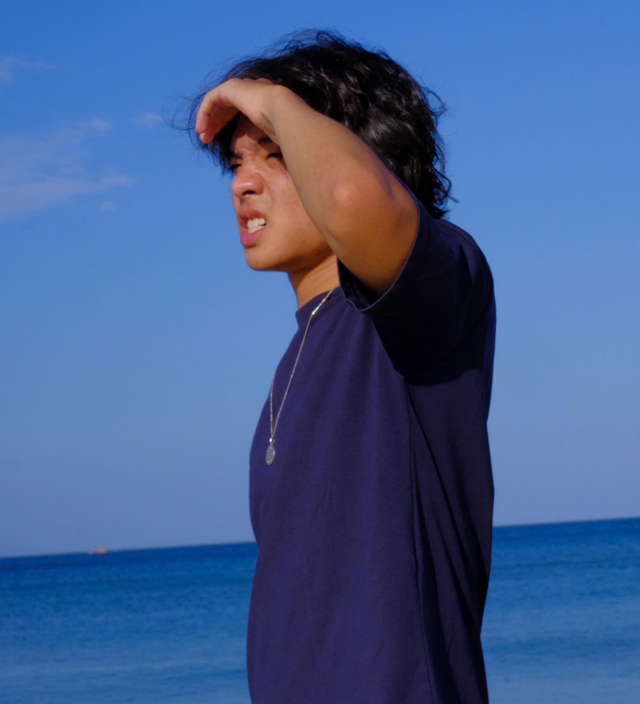

About
I used to think I had autism, attention deficit disorder, or some kind of mental health issues. Most of the time, I don't feel comfortable talking to people and I love being by myself while listening to my favorite songs, reading my favorite books. However, it changed when I started to look at my problems from a different perspective, and saw my personal values in it.
I'm a silent poet. I'd rather write than talk, rather think than perform. The way I feel about things around me barely appears in conversation, but on paper.
I'm a collector of humble objects. The daily route to school in the early morning, a half-filled notebook, mother's new knife — oh wait, I actually wrote a whole poem about that knife, it's at the end if you're curious. Anyway. I believe nothing is useless forever, even a broken brick can earn its place, given enough time.
I'm a proud Vietnamito. I watch rap culture from the stands, not the floor, collecting posters, tracing its history, learning its language before I ever try to speak it. I never claim it as my own, because I don't need to. I already have a culture I'm proud of. Humble - like I've always been taught to be. Brave – because it requires courage to remain loyal to who you are rather than trying to fit in somewhere else. Resilient – because I was born that way, bending but never breaking, regardless of what life throws at me.
I'm a lifelong learner. Coming from a background where education was highly appreciated long before I knew what it meant, and now I have inherited it without feeling any sort of stress; rather I feel proud of it since I think of it as a gift from my family to me. Every time I learn something new, it just adds another page to this book that my family began before my birth.
I'm your friendly neighborhood rapper. No character, no borrowed persona, no mask I put on before I step up to the mic. What you hear on a track is the same person you'd meet in a conversation.
Now here's the knife poem I promised.
Momma bought a new knife, which is the same model that I have been using for 4 years. What a coincidence. Thoughts started to kick in my brain when I noticed the difference in size between the two knives. Mine was smaller. Four years of cutting, chopping, and sharpening had gradually worn it down. I never noticed that. Ever.
Momma bought a new knife, which came in a fresh box. It is untouched, sharp, and beautiful. But what story does it have to tell, other than being born from a factory filled with cold steel, heartless machinery, and the screeching whine of metal? Mine has plenty of stories. The clumsy hand learning to hold a knife correctly for the first time. Tears that filled my eyes each time it slid through onions. The tenderness changing in different pieces of steak. The excitement when I finally created my first original dish.
Momma bought a new knife. It helped me to realize something. I have a big dream and high expectations, and I have never felt fulfilled. I always tell myself to try harder, grind harder even when I am mentally exhausted.
Momma bought a new knife. It reminded me of one thing. The beauty lies in the process. Taking a look back can help me get over it, at least it gives me a reason.
Momma bought a new knife, after all these years, will I?